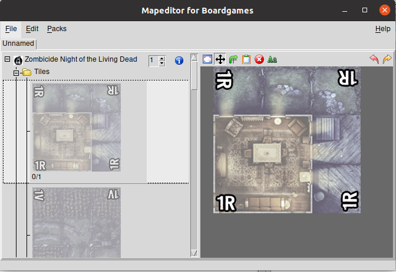

English translation contributed by Rogue.
The author would like to apologize for making Mapeditor available as a Windows program.
Overview
Mapeditor is a Perl program, available free of charge (please refer to license for details), designed as a basic tool to create and edit maps for various board games.
Using Mapeditor you can for example create a map similar to the following in a matter of minutes:
Mapeditor can easily be extended thanks to a modular pack system that allows you to add and remove tile graphics with little efforts.
History
Download
Source code as well as Linux and Windows binaries are available at https://sourceforge.net/projects/bgmapeditor/.
Installing
Uncompress the archive into the preferred location.
Double Click the binary applicable to your operating system (mapeditor.bin for Linux, mapeditor.exe for Windows).
It is also possible to execute the mapeditor.pl Perl script directly if the following modules and dependencies are installed and working: Tk, GD
User Interface

The main area can be used like a drawing board where you can add, move, rotate or delete tiles with simple mouse actions.
The result of clicking with the mouse on the canvas (using the left mouse button) can be changed in two ways:
- click on the local menu items just above the canvas
- using shortcuts
The 'mode' the mouse is set to will remain active until it is changed to a different one allowing for quick editing.
- Add a tile or object (
<n>). - Move a tile or object (
<Espace>). - Rotate a tile or object (
<r>). - Delete a tile or object (
<d>).
Graphical Resources
The tile graphics can be tailored to a particular board game. By packing the images into a Zip file you can import your custom set quite easily.
First create a parent directory and name it after your pack.
Then create as many subdirectories as required inside this top directory:
- tiles (playing surface)
- corridors and halls
- walls and doors
- miscellaneous props
- any other items you would like to include
If a subdirectory starts with an underscore "_" the resources will be treated as objects to be used as an overlay on top of the background tiles. Subdirectories starting with a dash "-" will be treated as intermediate layers between the background and overlaying objects. They are typically used as zone delimiters.
You can see examples here: Zombicide Packs.
GIF, PNG et JPEG are all acceptable file formats but formats that support transparency such as GIF or PNG come highly recommended.
Adding a pack
To add a pack select the appropriate entry from the Pack menu and browse to the pack you wish to install. Once selected the images are automatically converted and the original Zip archive can be discarded if desired.
WARNING: tiles and other graphics are not scaled in any way. This means that all pictures will require sizing appropriately before packing and importing.
Remove a pack
To delete a pack simply delete the pack folder from ./img/tiles.
WARNING: All maps created with the tiles and objects that you subsequently delete will not display properly!
TODO
- multiple selection and edition of the objects composing a map
- management of user packs with similar names
Note
- Undo/Redo can take an astronomical amount of resources for complex map with a high number of objects.
Bugs
Please forward all bug reports to the author. We endeavour to correct the faults but please bear in mind that this is a non commercial project and that the time available doing so is limited. Please be patient!
All Mapeditor bug reports and feature requests need to be indicated as such in the subject line of emails.
License
Mapeditor License
Copyright 2006 mzi, under Perl artistic license and/or GPL:
This is a free software; you can redistribute it and/or modify it under the same terms as Perl itself.
Graphic Packs
The basic pack included with this software is supplied exempt of further copyright. Note however that while the pack structure falls under the Perl artistic license the graphic material included with this program remain the intellectual property of the Author(s).
Please do not ask us to provide copyrighted packs in future version of the program and do not write to us to obtain copyrighted material. Copying and distributing copyrighted material is a criminal offense!Author
mzi. Email: akuma[at]swing[dot]be.
Once again all mapeditor bug reports and feature requests need to be indicated as such in the subject line of emails.